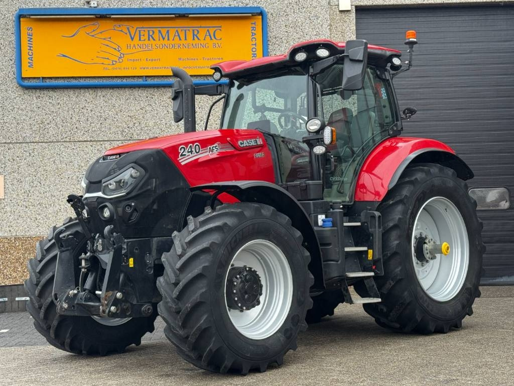

Case IH Puma 240

Case IH Puma 240 – це флагманська модель лінійки Puma, яка поєднує в собі високу потужність важкого трактора з маневреністю та легкістю середнього класу. Ця модель зазвичай комплектується безступінчастою трансмісією CVXDrive, яка забезпечує максимально плавне прискорення та оптимальну паливну ефективність, підбираючи оберти двигуна під конкретне навантаження. Puma 240 ідеально підходить для широкого спектра завдань: від швидкісного посіву та внесення добрив до важкого обробітку ґрунту.
| Параметр | Значення |
|---|---|
| Клас тяги | 4,0 — 5,0 |
| Тип ходової частини | колісний |
| Колісна формула | 4х4 (4WD) |
| Тип рами | рамна конструкція з посиленою задньою частиною |
| Основне призначення | глибока оранка, робота з великими дисковими боронами, швидкісна сівба, важкі транспортні перевезення |
| Параметр | Значення |
|---|---|
| Модель | FPT NEF 6.7 |
| Тип двигуна | 6-циліндровий, турбодизель (eVGT), Common Rail, система HI-eSCR2 (Stage V) |
| Спосіб охолодження | рідинне |
| Розташування циліндрів | рядне, вертикальне |
| Діаметр циліндра/хід поршня | 104 мм / 132 мм |
| Робочий об’єм | 6,7 л (6728 см3) |
| Номінальна потужність | 177 кВт (240 к.с.) / Макс: 270 к.с. (з Power Management) |
| Максимальний крутний момент | 1160 Нм (при 1400 об/хв) |
| Система пуску | електростартер |
| Питома витрата палива | 192–200 г/кВт·год |
| Параметр | Значення |
|---|---|
| Муфта зчеплення | відсутня (управління через гідростатику та планетарні передачі) |
| Тип КПП | CVXDrive (безступінчаста, варіаторного типу) |
| Кількість передач | безступінчасте регулювання (0–40/50 км/год) |
| Режими роботи | 3 програмовані діапазони швидкостей |
| Діапазон швидкостей (вперед) | 0,03 – 40,0 / 50,0 км/год |
| Діапазон швидкостей (назад) | 0,03 – 25,0 км/год |
| Вал відбору потужності | незалежний, 540 / 540E / 1000 / 1000E об/хв |
| Параметр | Значення |
|---|---|
| Тип коліс | пневматичні шини (радіальні) |
| Марка шин | передні: 600/65 R28; задні: 710/70 R38 (базові) |
| Радіус ведучого колеса | 0,935 м (заднє) |
| Кількість коліс | 4 (підтримується спарка) |
| Ведучі мости | обидва (передній міст Active із незалежною підвіскою) |
| Режим | Витрата |
|---|---|
| Під час роботи з навантаженням | 35,5 – 48,0 кг/год |
| Під час холостих переїздів | 12,0 – 16,5 кг/год |
| Під час зупинок (холостий хід) | 2,4 – 3,1 кг/год |
| Параметр | Значення |
|---|---|
| Маса експлуатаційна | 8230 – 9500 кг (без баласту) / до 14000 кг (макс.) |
| Довжина / Ширина / Висота | 5467 мм / 2476 мм / 3068 мм |
| Колія / База | 1530–2230 мм / 2884 мм |
| Дорожній просвіт | 510 мм |
| Мінімальний радіус повороту | 6,1 м |
| Об’єм паливного баку | 390 л (AdBlue — 48 л) |
| Параметр | Значення |
|---|---|
| Особливості кабіни | Кабіна з оглядом 360°, рівень шуму 69 дБа, дисплей AFS Pro 700, підлокітник Multicontroller |
| Гальма | мокрі дискові, посилені, з функцією ABS та стоянковим гальмом на трансмісії |
| Начіпний пристрій | задній триточковий (Кат. III/IIIn), вантажопідйомність — 10463 кг |